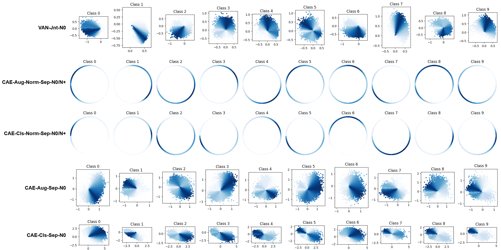

| Latent Geometry and Generative Behavior of Contrastively Learned Autoencoders | |||
| Angelina Ning | Angelika Wang | ||
| Final project for 6.7960, MIT | |||
| Latent Geometry and Generative Behavior of Contrastively Learned Autoencoders | |||
| Angelina Ning | Angelika Wang | ||
| Final project for 6.7960, MIT | |||
Contrastive learning has emerged as one of the most powerful paradigms for self-supervised representation learning, producing feature spaces that outperform autoencoders and even supervised models across many discriminative tasks [1][3][10].
Despite these successes, the internal structure and interpretability of contrastive embedding spaces remains underexplored. Prior theoretical and empirical analyses show that contrastive learning tends to produce representations that satisfy alignment (pulling positives together) and uniformity (spreading embeddings across the hypersphere), a product of the inductive biases enforced by the desing on the contrastive loss term [9]. Furthermore, we see that robust, semantically meaningful class structures often emerges even without labels [10]. However, these analyses primarily examine global behaviors, such as cluster compactness, inter-class separation, or overall hyperspherical distribution, and do not consider the semantics of the embedding space itself and out-of-distribution areas.
What's more, existing literature overwhelmingly focuses on downstream performance or cluster geometry, leaving open the question of what information contrastive embeddings actually retain about input pixels and whether they can support image generation [11].
Understanding the latent structure of contrastive models is important for two reasons not only for advancing interpretability, but it also informs ongoing efforts to integrate contrastive priors into generativ emodels like contrastive GANs [12] and cross-modal contrastive generators [13] by revealing whether contrastive embeddings themselves are suitable substrates for reconstruction, interpolation, and controlled generation.
Thus, this motivates the following for what we will be investigating in this project:
What semantic information is encoded within contrastive latent spaces, within clusters and in the inter-cluster regions, and can this structure be leveraged for novel image generation?
To approach this problem, we used MNIST data in order to analyze latent organization, reconstruction quality, and generative behavior. There are two main challenges when it comes to closing the gap between contrastive learning and generative models:
The high-level goal of contrastive representation learning is to push similar sample pairs close to each other while dissimilar ones are repelled in the learned embedding space. Contrastive learning is a very flexible method, being able to be applied to both supervised and unsupervised settings, and is particularly powerful when it comes to self-supervised learning in the unsupervised context [Lilian Weng].
To achieve above property, positive/negative paris are defined from the data set, where positive pairs are after augmentations of the same data and negative pairs are anything else. Given a positive pair $(z_i, z_j)$ and a set of negative samples $\{z_k\}$ from the same batch, the contrastive objective is:
\[ \mathcal{L}_{\text{InfoNCE}} = - \log \frac{\exp(\mathrm{sim}(z_i, z_j)/\tau)} {\sum_k \exp(\mathrm{sim}(z_i, z_k)/\tau)} \]
where $\mathrm{sim}(\cdot, \cdot)$ denotes cosine similarity and $\tau$ is the temperature parameter. This loss implicitly encourages two geometric properties on the learned representation space: alignment of positive pairs in latent space while separating negatives and uniformity in the distirbution of representations across the hypersphere [9].
Although contrastive learning was originally developed for discriminative representation learning, several recent works have explored its role within generative modeling frameworks by regularizing or structuring the latent spaces of GANs and VAEs.
In GANs, contrastive objectives have been used to stabilize training and promote semantic consistency: methods such as ContraGAN [12] encourage generated samples to occupy distinguishable regions of feature space, improving mode diversity and latent organization. Similarly, VAEs have integrated contrastive losses to promote disentanglement and more semantically meaningful latents, as seen in contrastive-prior VAEs [14] and contrastive graph-VAEs [16], where the contrastive signal shapes the structure of the latent manifold even though sampling still occurs from a Gaussian prior. Cross-modal systems such as CLIP [15] and contrastively aligned text–image generators [13] further highlight the role of contrastive learning as a conditioning mechanism, aligning modalities so that generative models can better map between them.
Across all these settings, contrastive learning influences the geometry and semantics of the generative process, with contrastive objectives being used as auxiliary losses. However, despite these applications of contrastive learning in broader generative systems, virtually no work directly studies whether a contrastive encoder’s latent space can function as a standalone generative latent space. Reasons for this gap include:
Isotropic priors have long been central in VAEs, normalizing flows, and diffusion models, where Gaussian priors enable stable interpolation and sampling [17][18]. Recent generative modeling work has emphasized the importance of isotropic latent distributions for stable sampling and interpolation. For example, Wang & He, 2025 [7] explicitly regularizes encoder representations toward uniform hyperspherical or isotropic Gaussian distributions, demonstrating that isotropic latent spaces drastically improve generative robustness and smoothness.
Contrastive encoders, though, produce representations distributed anisotropically on the hypersphere, with dimension-wise variance imbalances and non-Gaussian angular structure [9]. Interpolation or sampling in such spaces often produces off-manifold latent vectors that decoders cannot map to realistic images. Thus a fundamental challenge when attempting generative sampling from contrastive embeddings is ensuring that contrastive encoders can learn a sufficiently isotropic latenet space that will allow for generative priors.
We used the MNIST dataset, a collection of 70,000 grayscale images of 28x28 handwritten digits from 0 to 9. 60,000 images were assigned to the training set, and 10,000 were assigned to the test set. To train the contrastive encoder, we constructed positive pairs using two strategies. First, following standard self-surpervised contrastive learning practice, we constructed positive pairs via self-augmentation. We applied two independent stochastic augmentations to create two augmented views of the same sample: Gaussian blur with a kernel size of 3 and a randomly sampled standard deviation in the range [0.1, 2.0], followed by pixel-wise Gaussian noise with zero mean and standard deviation 0.1. Second, we constructed the set of positive pairs by randomly selecting two different samples from the same digit class. Unlike self-augmentation, which defines similarity through perturbations of a single instance, the goal of this strategy was to explicitly encode class-level similarity and encourage the latent space to group images by digit.
We based our models on a publicly-released autoencoder originally trained on Fashion MNIST. The encoder consists of several convolutional layers that downsample the input, followed by a multilayer perceptron (MLP) head that projects the feature maps into a fixed latent dimension. The decoder mirrors this structure, first applying a linear layer to map the latent vector back to feature maps that are then upsampled through a series of convolutional layers. For the vanilla autoencoder and for all decoder training and fine-tuning stages, models were optimized using a mean squared error (MSE) reconstruction loss between the input image $x$ and its reconstruction $\hat{x}$:
\[ \mathcal{L}_{\text{rec}} = \|x - \hat{x}\|_2^2 \]
For contrastive autoencoders, we pretrained the encoders using the InfoNCE contrastive loss applied to positive pairs constructed using the strategies described earlier in Background and Related Work.
We trained all models using the Adam optimizer with a learning rate of 2e-4, a batch size of 256, and either 15 or 30 epochs depending on whether the model was being trained from scratch or fine-tuned.
We applied the contrastive loss directly to an L2-normalized version of the latent representation in order to constrain embeddings to a hyperspherical geometry and promote a more isotropic latent distribution. The goal was to facilitate generative sampling by constructing a latent space that adhered to a defined prior—specifically, a uniform distribution over a unit hypersphere in the latent dimension. To generate samples from models trained with a normalized latent space, we sampled from a uniform distribution over the unit hypersphere.
Instead of enforcing spherical constraints directly on the latent representation, we applied contrastive learning to a normalized projection of the latent space. Specifically, the encoder outputs a latent vector z, which is then L2-normalized, and it is this L2-normalized space that the contrastive loss is applied to. This design follows standard practice in contrastive autoencoders and prevents the model from arbitrarily inflating embedding magnitudes to push positive pairs together, rather than learning meaningful angular separation. However, unlike the previous contrastive learning strategy, it does not restrict latent embeddings to a hypersphere. We wanted to compare whether this reduced constraint on the latent distribution—particularly the freedom in per-dimension magnitudes—would lead to poorer generations than in the normalized hyperspherical setting. To generate samples from models trained without a normalized latent space, we sampled from a Gaussian distribution with independent axes.
We investigated two decoder training regimes: separate decoder training and joint encoder-decoder fine-tuning. In the first regime, we froze the pretrained encoder and trained the decoder independently using only the reconstruction loss across 30 epochs. In the second regime, we jointly fine-tuned the pretrained encoder and the decoder end-to-end using the reconstruction loss.
During training, we also added Gaussian noise to the latent representation before decoding, so that the decoder would learn to reconstruct the original sample $x$ with latent embedding $z$ given the noised embedding $z' = z + \epsilon$, where $\epsilon \sim \mathcal{N}(0, 2I)$. We chose $\sigma=0.02$. By training the decoder using noised latent embeddings, we wanted to evaluate whether adding noise would help mitigate latent-space dead zones and thus improve generative behavior.
To evaluate generation quality, we randomly chose latent embeddings from a Gaussian prior $\mathcal{N}(0, 2I)$ and evaluated the relative sample diversity and the Fréchet Inception Distance (FID). The sample diversity was computed using the average pairwise L2-distance between [insert number] randomly selected pairs of generated images. The FID was computed by extracting deep feature embeddings using a pretrained Inception-V3 network for [insert number] each of real and generated images. The resulting feature distributions were modeled as multivariate Gaussians with means $(\mu_r, \mu_g)$ and covariances $(\Sigma_r, \Sigma_g)$, and the FID was calculated as follows:
\[ \mathrm{FID} = \|\mu_r - \mu_g\|_2^2 + \mathrm{Tr}\left(\Sigma_r + \Sigma_g - 2(\Sigma_r \Sigma_g)^{1/2}\right) \]
To assess the structure and smoothness of the learned latent spaces, we generated interpolation-based visualizations for all of the encoders. For each model, we considered two types of interpolation. The first was prior-based interpolation, where endpoints were sampled from the model’s assumed latent prior. The purpose of this was to investigate potential dead zones, where the decoder had not learned to decode from. The second was data-driven interpolation, where endpoints were obtained by encoding real samples. The purpose of this was to investigate whether the latent space encoded geometric meaning in areas where the decoder was trained on.
For the first strategy, given models with unconstrained latents, endpoints were sampled from an isotropic Gaussian distribution with zero mean and independent dimensions. For hypersphere-normalized models, endpoints were sampled uniformly from the unit hypersphere. For models with unconstrained latents, given two latent vectors $z_0$ and $z_1,$ we generated linear interpolation paths using $z(t) = (1 - t) z_0 + t z_1$ with evenly spaced $t\in[0,1]$. For models with normalized latents, we interpolated using spherical linear interpolation (SLERP) as follows:
$$ \operatorname{SLERP}(\mathbf{z}_1, \mathbf{z}_2; t) = \frac{\sin((1 - t)\,\theta)}{\sin \theta}\,\mathbf{z}_1 + \frac{\sin(t\,\theta)}{\sin \theta}\,\mathbf{z}_2, \quad t \in [0,1] $$
With the angle \( \theta \) defined as:
$$ \theta = \arccos\!\left( \frac{\mathbf{z}_1^\top \mathbf{z}_2} {\|\mathbf{z}_1\|_2 \, \|\mathbf{z}_2\|_2} \right) $$
Each interpolated latent was decoded into the data space for visualization.
Finally, to study the geometric and semantic structure of the learned embedding spaces, we project high-dimensional latent vectors \( z \in \mathbb{R}^d \) onto the two-dimensional unit circle \( S^1 \subset \mathbb{R}^2 \). This mapping enables interpretable visualization of both class-level structure and global uniformity. [9].
To examine how different digit classes are organized in the latent space, we apply Principal Component Analysis (PCA) to reduce embeddings from dimension \( d \) to 2. PCA is an appropriate choice for this analysis because it preserves the directions of greatest variance in the data; as a result, it tends to reveal clusters, separations, and internal structure that reflect how the encoder organizes the semantic content of images. PCA identifies the directions of maximum variance, producing a projection
\( z_{\text{PCA}} = W^\top (z - \mu), \qquad W \in \mathbb{R}^{d \times 2}, \)
where \( W \) consists of the top two eigenvectors of the empirical covariance matrix and \( \mu \) is the mean embedding. Because class structure induces directionally coherent variance, PCA projections reliably expose class-separable organization when such structure exists in the latent space. After projection into \( \mathbb{R}^2 \), we normalize each point onto the unit circle:
\( \hat{z} = \frac{z_{\text{PCA}}}{\|z_{\text{PCA}}\|_2}. \)
By plotting these normalized embeddings per class, we observe how tightly clusters form, how separable different digits are, and how training regimes alter the semantic geometry of the embedding space. PCA is used specifically for class-conditional visualization because it reveals meaningful structure and separation between data groups.
To evaluate global uniformity and isotropy, key features needed to avoid "dead zones" in the latenent space and encourage meaningful decoding/generation, we instead use random orthonormal projections. Unlike PCA, which highlights directions of high variance, random projection preserves the unbiased distributional structure of the embeddings.
We begin with a Gaussian random matrix \( G \in \mathbb{R}^{d \times 2} \) whose entries follow \( G_{ij} \sim \mathcal{N}(0, 1) \), and orthonormalize it using QR decomposition:
\( R = \operatorname{qr}(G), \qquad R \in \mathbb{R}^{d \times 2}. \)
Embeddings are then projected as
\( z_{\text{RP}} = z R, \qquad \hat{z} = \frac{z_{\text{RP}}}{\|z_{\text{RP}}\|_2}. \)
To characterize hyperspherical uniformity, we compute each point’s angular coordinate \( \theta = \operatorname{atan2}(\hat{z}_y, \hat{z}_x) \) and estimate its density using kernel density estimation (KDE). A uniform angular density indicates isotropic distributed embeddings, whereas peaks or gaps correspond to anisotropy or latent collapse. Random projections therefore serve as a principled tool for measuring the geometric regularity of the learned representation space, a property increasingly valued in modern generative modeling [7].
Thus, PCA projections are used to reveal semantic, class-conditional organization, while random projections are used to measure hyperspherical uniformity and isotropy of the learned latent space. Together, these complementary visualization strategies provide a detailed view of the geometric and semantic structure induced by contrastive and autoencoding training regimes.
| Model | Vanilla / Contrastive | Normalized Latent | Augmented Positive Pairs | Decoder Training | Noise Added to Latent |
|---|---|---|---|---|---|
| VAN-Jnt-N0 | Vanilla | ❌ | ❌ | Joint | ❌ |
| CAE-Aug-Norm-Sep-N0 | Contrastive | ✅ | ✅ | Separate | ❌ |
| CAE-Cls-Norm-Sep-N0 | Contrastive | ✅ | ❌ | Separate | ❌ |
| CAE-Aug-Sep-N0 | Contrastive | ❌ | ✅ | Separate | ❌ |
| CAE-Cls-Sep-N0 | Contrastive | ❌ | ❌ | Separate | ❌ |
| CAE-Aug-Norm-Jnt-N0 | Contrastive | ✅ | ✅ | Joint | ❌ |
| CAE-Cls-Norm-Jnt-N0 | Contrastive | ✅ | ❌ | Joint | ❌ |
| CAE-Aug-Norm-Sep-N+ | Contrastive | ✅ | ✅ | Separate | ✅ |
| CAE-Cls-Norm-Sep-N+ | Contrastive | ✅ | ❌ | Separate | ✅ |
| CAE-Aug-Norm-Jnt-N+ | Contrastive | ✅ | ✅ | Joint | ✅ |
| CAE-Cls-Norm-Jnt-N+ | Contrastive | ✅ | ❌ | Joint | ✅ |
To understand how different training strategies shape the learned embedding space, we visualize the class-conditional latent distributions using a PCA projection from the original 64-dimensional latent space down to two dimensions. The figure below shows the visualization of the classes. Not only a select few model results are show, but the full image is in the colab in the appendix.
Across the contrastive models in the figure, we observe clear and distinct grouping of digit classes. Importantly, this occurs not only in the “Cls” models—where positive pairs are explicitly selected from the same class—but also in the “Aug” models, where positive pairs come purely from noise-augmented views of the same input image, without any label information. The emergence of coherent clusters under augmentation-based contrastive objectives indicates that the encoder discovers stable semantic features invariant to augmentation. In other words, the geometry of the embedding space reflects genuine semantic similarity learned through invariances, demonstrating that contrastive learning can recover class-aligned structure even in fully unsupervised settings.
Within each class, the shape and spread of the distributions differ noticeably. Some digits form compact, highly concentrated clusters (e.g., 1, 0), while others appear more elongated or diffuse (e.g., 5, 8). These differences mirror the intrinsic variability of handwritten digits: digits with greater stylistic diversity naturally occupy a broader region of latent space. Moreover, the PCA projections reveal proximity relationships that resemble human perceptual similarity—for example, digits such as 1 and 7 or 3 and 8 often occupy neighboring regions. This alignment with human intuition further demonstrates that the latent space captures meaningful semantic and morphological structure.
In contrast, the vanilla autoencoder (VAN-Jnt-N0) exhibits a noticeably different geometry. Instead of a single coherent cluster per class, several classes show multiple “peaks” or submodes within their distribution. Because the autoencoder is trained solely with a reconstruction objective and lacks a mechanism for enforcing invariance, stylistically different variants of the same digit may map to entirely different regions of latent space. This fragmentation produces multi-modal and less coherent class clusters. By comparison, contrastive learning—through alignment of augmented views and a global spreading effect—produces significantly more structured, unified, and interpretable class representations.
Overall, these PCA-based visualizations reveal three key insights: (1) contrastive learning yields strongly organized, semantically meaningful class clusters even without class-based supervision; (2) the internal structure of each class reflects both data variability and perceptual similarity; and (3) vanilla autoencoders produce multi-modal and less organized latent clusters, highlighting the effectiveness of contrastive objectives for learning clean and interpretable latent geometry.
Our initial goal was to assess decoder reconstruction performance as a sanity check—specifically to determine whether any models suffered from representation collapse in the latent that would render further analysis of the decoder uninformative. For qualitative visualization, we selected a random digit from each class in the test set and compared the corresponding reconstructions across models. Consistent with the quantitative results, we observed that models with higher test MSE generally produced visibly poorer reconstructions, whereas lower-MSE models yielded sharper and more accurate outputs. In general, since all decoders produced relatively coherent results, we proceeded on analysis with all of them.
The figure above visualizes the latent distributions for each model by projecting randomly selected pairs of latent dimensions into two dimensions. We chose to project randomly selected pairs instead of PCA-based projections because random coordinate projections avoid introducing variance-based bias, thus providing more unbiased insight into the geometric structure in the latent space. As expected, models with normalized latents exhibit projections constrained to the unit circle, whereas unnormalized models display unconstrained, anisotropic spreads.
Among the normalized models, CAE-Aug-Norm-Sep-N0/N+ exhibits nearly full coverage of the circular manifold, despite mild density variations. This geometric property aligns closely with its relatively stronger generative behavior: interpolations between real samples are smooth and semantically meaningful (e.g., clear morphing between the digits 7 to 2), and the model achieves comparatively low FID. In contrast, CAE-Cls-Norm-Sep-N0/N+ shows severe concentration along a small arc of the circle. Its latent has many dead zones, which with poor interpolation behavior—intermediate latent codes often decode to nonsensical samples—and comparatively poor FID. This indicates that even when normalization is enforced, inadequate coverage of the hypersphere severely limits generative smoothness and diversity.
For the unnormalized models, CAE-Aug-Sep-N0 displays a broader and more diffuse latent spread than CAE-Cls-Sep-N0, which is consistent with its lower FID. Interestingly, despite its poorer overall generative metrics, CAE-Cls-Sep-N0 yields a more interpretable interpolation between two real samples. One plausible explanation is that class-based positives induce denser, more compact clustering, allowing interpolation within a specific local region of the latent space that the decoder has learned well; however, this is just a hypothesis.
The jointly trained normalized models, CAE-Aug-Norm-Jnt-N0 and CAE-Cls-Norm-Jnt-N0, perform among the worst in generation quality. Their projections reveal extreme concentration in small regions of the hypersphere, which reflects strong latent collapse. This behavior is consistent with their very high FID and the fact that their interpolation visualizations are nonsensical for intermediate embeddings. Our hypothesis is that joint training disrupts the geometric structure imposed by the contrastive objective during finetuning, since contrastive alignment is no longer explicitly enforced while the decoder is optimized.
Finally, adding noise during decoder training (N+) does not appear to substantially alter the geometric structure of the latent space or improve generative performance. We thought noise would encourage robustness to latent perturbations, but its effect on FID and quality of interpolation visualizations was minimal.
The main takeaways we found through our experiments are as follows:
A limitation of our sampling procedure was that rather than sampling from a learned latent distribution, we relied on generic priors (Gaussian with independent dimensions or uniform hypersphere in the case of unnormalized and normalized latent spaces, respectively) for generation. An alternative and potentially more expressive approach would be to estimate empirically learned latent distributions for each digit class and sample directly from those class-specific distributions to decode into new samples. Additionally, all of our models failed to interpolate between two random samples from the specific generic prior. Even in the case of restricting the latent space to a unit hypersphere, it appeared that the learned latent embeddings did not saturate a uniform distribution, thus resulting in dead zones when decoding for generation. In the future, it would be a good idea to explore explicitly enforcing a uniform distribution over the hypersphere during training, perhaps by incorporating an explicit regularization term. This would help align the learned latent distribution with the specified prior, potentially improving generation by avoiding dead zones.
Link colab notebook: Understanding Google Colab Experiments